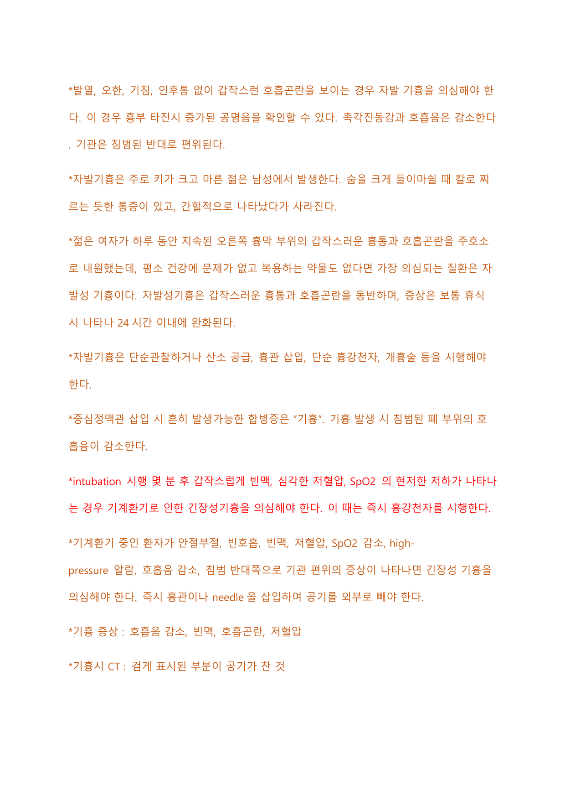

호흡기계
급성 폐부종부터 결핵·폐렴·폐암·ARDS·천식·COPD, 흉관 간호와 산소요법, 기흉·폐색전증·폐고혈압, 호흡기 신체검진과 호흡재활까지 호흡기계 주요 질환과 중재를 정리한다.
1 급성 폐부종 Acute Pulmonary Edema
- 흉부 CT로 폐포에 얼마나 물이 차는지 확인 가능하다.
- 혈액검사 상 BNP를 측정하여 심인성인지 비심인성인지 여부를 확인할 수 있다.
- 강심제: 도파민, 도부타민 사용.
- 수분 배설 촉진을 위한 이뇨제 사용.
- 혈관 확장을 위해 nitrate, morphine 사용(morphine은 심근의 산소소모량을 감소시킨다).
- 산소요법 시행: 호흡곤란 감소를 위해 high-flow와 같은 고온 가습 산소를 적용한다.
- 흡기 및 호기 시 폐포가 collapse 되지 않도록 양압을 적용하는 BiPAP 치료 시행.
- 혈압이 낮으면 승압제 사용. Milrinone(Primacor)은 승압제이면서 강심제이다.
2 결핵 Tuberculosis, TB
결핵균(Mycobacterium tuberculosis)에 의한 전염성 만성 감염병으로 85%는 폐에서 발생하고 나머지 15%는 흉막, 뇌척수액, 림프절, 뼈와 관절 등에서 발생한다. 공기감염으로 전파되며, 전염성 있는 환자가 기침하거나 말할 때 나온 결핵균이 공기 중에 떠다니다가 다른 사람의 폐로 들어가 증식한다.
특징적으로 결핵성 육아종을 형성하는데, 대식세포가 박테리아를 봉인하여 퍼지지 않게 하기 때문이며 육아종 중심부에 건락괴사가 나타난다. 일차 감염 후 병소가 퇴화해 석회화된 결절을 생성하여 잠복하는 것을 잠복결핵, 면역력 약화 시 다시 활동하거나 재감염되어 진행되는 것을 이차결핵이라 한다. 이차 결핵 시에는 빠른 염증반응과 광범위한 괴사가 초래되고, 괴사성 잔해가 떨어져 나와 폐조직에 구멍을 남기는데 이를 공동화병소라 한다(공동화병소가 있다는 것은 결핵 재발을 의미). 결핵균이 혈류를 따라 이동해 다른 장기에 육아종을 형성하고 광범위한 감염을 일으키는 것을 속립성 결핵이라 한다.
만성기침(활동기 시 생산적 기침, 초기에 마른기침), 객혈, 체중감소, 미열, 야간 땀 흘림, 권태감, 식욕부진, 흉통, 호흡곤란, 악설음, 압통이 있는 림프절.
- 흉부 X선: 호흡기 증상이 있는 경우 첫 번째 검사. 폐상엽의 결절이나 공동화병소를 확인해 감별진단한다. 폐결핵 환자의 1/3은 비전형적 방사선 소견을 보일 수 있어 감별이 어려우면 CT 시행.
- AFB stain(객담 도말검사): AFB는 acid-fast bacillus(항산균). 객담을 형광물질로 염색해 현미경 관찰. 오염 가능성이 높아 2~3회 연속 시행. NTM도 양성으로 나올 수 있어 위양성 가능성이 높다.
- MTB-PCR: 결핵균 특정 DNA 염기서열을 증폭하여 확인. 민감도·특이도가 높아 의심되는 모든 환자에서 시행하나, 음성이어도 폐결핵을 배제할 수 없다.
- AFB culture(배양): 결핵을 확진하고 MTB인지 NTM인지 확실히 알 수 있다. 결과를 얻는 데 시간이 오래 걸리고 오염 가능성이 높아 2~3회 연속 시행.
- 투베르쿨린 피부검사(PPD test): PPD 시약을 피내주사 후 48~72시간 후 홍반을 제외한 경결의 가장 큰 지름을 측정. 1차 검사에서 10mm 이상(면역억제환자는 5mm 이상)이면 양성. 비용이 저렴하나 BCG 접종이나 NTM의 경우 위양성, 활동성·잠복 결핵을 구별할 수 없다.
- IGRA 검사: 인터페론 감마 분비 검사. 채혈한 혈액에 결핵균 특이 항원을 넣어 인터페론 감마 분비를 확인. 특이도가 높으나 비용이 많이 들고 활동성·잠복결핵을 구별할 수 없다.
- 조직학적 진단: 의심 병변 조직검사에서 육아종 소견이나 거대세포 발견 시 진단. 특히 폐외결핵에서 용이.
- 약제 감수성 검사(DST): 약제 내성 유전자 변이 확인. 모든 확진 환자의 첫 배양 균주에서 이소니아지드·리팜핀에 대해 시행하고, 내성 검출 시 퀴놀론 포함 이차 항결핵제 감수성 검사 시행.
AFB stain과 MTB-PCR이 모두 양성이거나, 도말 음성·PCR 양성이면 결핵으로 추정. 도말 양성·PCR 음성이면 NTM으로 추정. 두 검사 모두 음성이면 임상적 판단으로 진단.
두 가지 원칙: ① 약제 내성이 치료 실패의 가장 큰 원인이므로 작용기전이 다른 여러 항결핵제를 동시에 복용해 내성을 예방한다. ② 결핵균은 증식 속도가 매우 느리고 간헐적으로 증식하므로 6개월 이상 장기 치료가 필요하다.
1군 항결핵제는 효과가 좋고 부작용이 적어 1차 치료로 사용하며, 내성·부작용 발생 시 다른 군 약제를 선택한다.
| 구분 | 요법 | 약물 |
|---|---|---|
| 활동성 결핵(6개월 표준요법) | 2HERZ / 4HR | 첫 2개월 H(isoniazid)·E(ethambutol)·R(rifampin)·Z(pyrazinamide), 이후 4개월 H·R. E는 감수성 고려해 중단 가능. Z 사용 불가 시 9HRE |
| 잠복결핵 | 3HR | 이소니아지드+리팜핀 3개월(CDC 권장) |
| 4R | 리팜핀 4개월(CDC 권장) | |
| 9H | 이소니아지드 9개월 |
활동성 결핵 환자와 접촉한 자에게 가능한 빨리 PPD 검사를 하고 화학적 예방법을 바로 시작한다. 첫 PPD 음성이면 3개월 이내 재시행하고 두 번째도 음성이면 예방법 중단.
폐결핵 치료는 내과적 약물요법이 원칙이나, 암 의심·지속되는 다량의 재발성 객혈, 6개월 화학요법에도 객담 양성·감염 동반 파괴 폐, 두꺼운 공동화병소로 재발 가능성이 있는 경우 수술을 고려한다.
- 결핵약은 하루 1회 일정한 시간에 공복 시 복용. 식전 복용이 불가능하면 식사 2시간 후나 취침 전 복용 가능.
- 약 개수가 많아도 나눠 복용하지 않고 한 번에 복용.
- 증상이 호전되어도 내성 예방을 위해 복용을 중단하지 않도록 한다. 장기간 투약으로 이행이 중요함을 교육.
- 항부정맥제·와파린·피임약·스테로이드·인슐린 등 다른 약물 대사에 영향을 미쳐 용량 조절 필요. 스테로이드는 증량, 경구 피임약은 효과가 없어져 다른 피임법 사용.
- 금연·금주(흡연은 폐기능 약화, 음주는 간독성).
- 가장 흔한 부작용은 위장장애와 간독성.
- 약물 시작 전(활동기)에는 격리하며, 복용 후 2주 이상 지나면 전염력이 없어져 사회생활 가능. 기침 예절·마스크 착용 교육.
- 적당한 수분·영양 공급(고단백·고탄수화물 식이).
치료 시작 후 수 주 내 증상 없이 간효소 수치가 일시 상승할 수 있다. 정상치의 3배 이내면 계속 투여하며 경과관찰, 3배 이상이거나 황달·AKI·PLT 감소·청신경장애·안독성이 있으면 약물 중단. 정상화되면 하나씩 다시 투여.
| 약물 | 부작용·교육 |
|---|---|
| Isoniazid (INH) | 피리독신(vit B6) 결핍 초래 → 말초신경병증, 고위험군은 피리독신 복용 권고. 가장 흔한 유해반응은 손발 무감각·발진. 드물게 간독성(황달·피로·간효소 상승·식욕상실 유의, 주로 한 달에 한 번 간효소 검사) |
| Rifampin | 체액 색 변화 → 소변이 오렌지색, 콘택트렌즈 변색 가능 |
| Ethambutol | 시력 저하·시신경병증 위험 → 시력 변화 시 안과 진료 |
| Pyrazinamide | 요산 배출 방해 → 고요산혈증, 광과민반응으로 노출 부위 검붉게 변색 → 자외선차단제 사용 |
3 폐렴 Pneumonia
폐의 감염으로 대개 한 엽만 침범하는 엽성폐렴, 기관지 중심으로 병변을 형성하는 기관지폐렴, 폐포 벽에 영향을 미치는 간질성폐렴으로 나뉜다. 원인미생물은 폐렴구균·마이코플라즈마균·녹농균 등의 세균, 바이러스, 곰팡이균 등 다양하다. 폐포 내로 병원체가 흡입되면 폐포의 대식세포·호중구에 의해 염증매개물질이 분비되어 염증반응이 유발되고, 폐포 내 삼출물이 증가하여 가래·기침·호흡곤란 등이 발생한다. 진균성 폐렴은 주로 면역억제환자에서 발생하며 환자 간 감염되지 않는다.
| 엽성 폐렴 | 기관지 폐렴 | 간질성 폐렴 | |
|---|---|---|---|
| 가장 흔한 원인균 | 폐렴구균(백신 예방, 페니실린 사용) | 그람음성균·혐기성균·황색포도상구균·녹농균·진균 | 바이러스·마이코플라즈마(항생제 치료 필요) |
| 증상 | 호흡곤란·발열·백혈구 증가 | 호흡곤란·발열·백혈구 증가 | 상기도 감염·경한 증상, 급성염증반응 적음 |
| 방사선 소견 | 한쪽 폐엽 전체 침범, 산재성 경화 | 한쪽 또는 양쪽에 퍼진 반점상 경화 | 간질성 양상의 산재성 선과 결절 |
| 기저 상태 | 고령·기저질환(백신 예방접종 교육) | 쇠약·수술 후·근육성 질환·면역억제·흡인성 폐렴 | 없음 |
| 조직학 소견 | 급성염증세포·폐포 내 염증성 삼출물 | 급성염증세포·폐포 내 염증성 삼출물 | 폐포벽의 염증, 염증성 세포는 적고 폐포벽이 두꺼움 |
egophony: 엽성폐렴(lobar pneumonia) 환자의 폐 부위 청진 시, 대상자가 "이(ee)"라고 말하면 청진기에서는 "에이(ey)"로 들리는 것.
- CAP(지역사회획득폐렴): 병원에 오기 전 또는 입원 2일 이내 발병, 상당수 바이러스가 원인.
- HAP(병원획득폐렴): 입원 48시간 이후 발생(입원 당시 잠복기 아닌 경우). 일반적으로 더 위중.
- HCAP(의료기관관련폐렴): 입원하지 않았으나 광범위한 의료서비스를 받는 CAP 일부 환자.
- VAP(인공호흡기관련폐렴): HAP의 하나로 기관 내 삽관 후 48~72시간 이후 발생. 구강 또는 위내 액체 흡인, 구강 내 colonization이 전구물질. 예방을 위해 head 30~45도 상승, 2~4시간마다 구강간호, 벤틸레이터 서킷을 자주 교환하지 않는다.
호흡곤란, 발열, 오한, 기침, 진한 녹색 객담, 백혈구 증가, 흉막성 흉통. 청진 시 수포음·흉막마찰음. 비정형·바이러스성 폐렴은 객담 없는 마른 기침만 호소하는 경우가 흔하고, 노인은 열·기침 없이 피로·식욕부진·의식저하만 보일 수 있다.
폐렴이 있는 부위는 타진 시 둔탁음, 촉각진동감 증가, 청진 시 수포음.
| 구분 | 객담 양상 |
|---|---|
| 폐렴구균성 | 녹슨색 객담 |
| 인플루엔자간균·녹농균(세균) | 초록색에 가까운 가래(더 심각한 감염) |
| 마이코플라즈마·바이러스(비정형) | 객담 없거나 마른 기침 |
| 기관지 폐렴 | 황녹색 화농성 객담 |
| 간질성 폐렴 | 가래 없거나 투명한 점액성 객담 |
| 세균·하부 호흡기 감염 | 노란색 가래 |
| 분홍빛·빨간색 | 호흡기 출혈 의미 |
가래 색이 벽돌색에서 점점 초록색으로 진해지면 청색증을 의미하며 산소 운반 능력 감소를 시사한다.
- 적절한 항생제 투여(일반적으로 10~14일).
- 수액요법으로 수분 공급 및 탈수 예방.
- 증상에 따라 산소치료 병행.
- 예방: 매년 인플루엔자 백신, 65세 이상·만성질환자는 폐렴구균 백신.
경험적 항생제(CAP 의심 시): 베타락탐계열 + macrolide계 또는 fluoroquinolone계. macrolide 내성 시 doxycycline. 심부전 등 심질환·당뇨가 있으면 respiratory fluoroquinolone 권장. 입원 환자라도 바로 인플루엔자·폐렴 백신 투여 가능.
- 치료 후 퇴원했다가 재입원하여 고열·권태감·오한·피로·호흡곤란과 CXR 상 폐경화를 보이면 폐농양을 의심. 고열·가슴 울혈·권태감·부패성 객담(putrid sputum)이 주호소면 가장 가능성 높은 질환은 폐농양.
- 반복적인 폐렴 시 가장 먼저 분비물 배출 간호를 제공하고 진동 유발기기를 사용.
- 항생제·흉부물리요법 중에도 악화되면 종양 확인을 위해 기관지내시경 고려. rigid 내시경은 이물질 제거·객혈 시(치료 목적), flexible는 호흡기질환 진단에 이용.
4 기관지염 Bronchitis
- 급성기관지염: 급성 호흡기감염으로 유발되는 기관·기관지의 염증. 급성 상기도 감염 후 2~3주간 기침 지속, 맑은 점액성 객담 동반(일부 화농성). 발열·오한과 함께 수포음 혹은 호기성 천명음이 들릴 수 있다.
- 만성기관지염: 2년 연속, 최소 3달간 지속적으로 가래를 동반한 기침이 있는 경우. 폐쇄성 폐질환으로 잦은 호흡기 감염에 의한 흡기 자극으로 기도 상피세포가 두꺼워지고 기도가 좁아진다. 객담을 동반한 기침과 저산소증이 특징.
만성기관지염 초기: 기도분비물 증가·발열·기침·오한. 폐경화는 없으므로 촉각진동감이 증가되지 않음.
특별한 치료 없이 호전되는 경우가 많다. 증상 감소를 위해 해열제·진해거담제, 기관지확장제·스테로이드를 쓸 수 있으나 3주 이내 완화되면 약물 사용을 권고하지 않는다. 바이러스성은 대증치료 중심, 세균성은 항생제 치료. 휴식·충분한 수분 보충·금연·마스크 착용을 통한 오염물질 흡입 예방을 교육.
5 폐암 Lung Cancer
| 종류 | 빈도 | 특징 |
|---|---|---|
| 편평상피세포암 (Squamous cell carcinoma) | 약 30% | 폐·기관지 세포의 편평상피세포에서 발생, 흡연 관련, 폐문(중심부위)에서 생성, 기관지폐쇄 유발 |
| 선암 (Adenocarcinoma) | 약 40% | 폐 선세포에서 발생, 가장 흔함, 주로 기관지 말단에 발생 |
| 대세포암 (Large-cell carcinoma) | 4~10% | 폐 말초로 기관지에 발생, 세포가 큼, 비소세포암 중 예후가 나쁜 편 |
| 소세포암 (Small cell carcinoma) | 15~25% | 악성도가 강해 전이된 상태로 발견, 폐 중심 기도 발병, 급속 성장해 종괴 큼, 흡연 관련 |
소세포폐암 발생의 98%는 흡연과 관련. 성장 속도가 빠르고 조기 전이 경향이 있어 진단 시점에 광범위하게 퍼져 있는 경우가 많으며 기관지 양쪽 중앙 위치에 잘 발생, 전체 폐암의 25%를 차지.
- 가장 큰 원인은 흡연(직접·간접 흡연 모두). 예방을 위해 금연 필수.
- 대기 오염, 공해 물질, 방사선 물질, 석면, 비소 등 발암 물질.
- 만성폐쇄성 폐질환·결핵 등 폐질환, 가족력(2~3배 위험 증가).
- 위험요소로 폐암 유전자 변이가 발생하고 기관지 상피가 종양조직으로 전환. 원발성 폐암의 95%는 기관지 상피암종. 폐는 육종이 전이되는 특징적 부위.
비소세포성은 암 크기·림프절 전이·다른 장기 전이로 판단하는 TNM 분류(1~4기). 소세포성은 제한 병기·확장 병기로 구분.
| 병기 | 내용 |
|---|---|
| 1기 | 폐에만 국한, 림프절 전이 없음. 종양 3cm 이하 1A, 초과 1B |
| 2기 | 근처 림프절 전이가 있거나, 림프절 전이 없어도 흉벽·횡격막·종격동·흉막·심낭막 침범. 림프절 전이 있고 3cm 이하 2A, 3cm 초과/주변 침범 2B |
| 3기 | 종격동 림프절까지 전이, 악성 흉수·큰 혈관·기관 침범. 같은 쪽 3A, 반대쪽 3B |
| 4기 | 다른 장기로 전이된 상태 |
소세포성 폐암: 제한성 병기(종격동 포함 폐 한쪽에만 국한), 확장성 병기(반대편 폐나 다른 장기 전이).
초기에 증상이 없고, 나타날 때는 이미 진행된 경우가 많다. 만성 기침·객담·객혈·쉰목소리·호흡곤란·흉통·흉막강 삼출. 전이 부위에 따라 다양: 뇌 전이 시 두통·경련·구토, 뼈 전이 시 통증·골절.
- 영상검사: 흉부 X선(기본, 심장 뒤·뼈 겹친 부분은 안 보일 수 있음), 흉부 CT(부위·림프절 침범), 병기 설정·전이 확인 위해 PET-CT·brain MRI·bone scan.
- 조직검사: 기관지내시경(bronchoscopy, 조직 채취로 확진, 시술 후 객혈 위험으로 3시간 금식), 세침흡인검사(PCNA, 기관지 접근 어려운 경우 유용, 시술 후 기흉 예방 위해 모래주머니 압박·CXR f/u).
- 종양 표지자: 혈청 CEA·NSE. 특이도·민감도가 높지 않아 확진보다 치료효과·재발 판단에 유용.
- 유전자검사: 진행성 비소세포암 20~30%에서 EGFR 돌연변이, 암세포 표면 단백질 PD-L1 확인.
| 비소세포성 | 소세포성 | |
|---|---|---|
| 특징 | 더 흔함, 화학요법에 잘 반응 안 함 | 완치 불가, 진단 시 예후 불량·전이 많음, 화학요법에 잘 반응 |
| 수술 | 수술 가능(단 stage 3B·4기는 불가) | 수술 불가, 초기여도 항암치료 시행 |
| 치료 | 수술+항암+방사선, 분자표적항암제·면역항암요법 | 생명연장 목적 항암화학요법+방사선 |
| 기타 | 유전자 돌연변이가 더 잘 나타남 | 흡연과 강한 연관, 신경내분비세포 유래로 ACTH 분비 → 쿠싱증후군 유발 가능 |
비소세포암 병기 예: T4N2M0이면 stage 3B(수술 불가), T2N1M0이면 stage 2B(수술 가능).
치료의 종류
- 수술요법: 절제 부위에 따라 전폐절제술·폐엽절제술·쐐기절제술, 방법에 따라 개흉술·흉강경 수술. 수술 고려 시 ① 비소세포암이 분명한가 ② 환자의 생리적 상태 ③ 완전 절제 가능 여부 확인. 수술 전 폐기능검사·흉부 CT·PET·brain MRI 필수. 3개월 이내 MI 병력이 있으면 불가, 폐확산능검사에서 수술 후 예측치 80% 이상이어야 함.
- 항암화학요법: 대사길항물질·식물유도체·알킬화제 등 병합 투여. cisplatin·cyclophosphamide 등 알킬화제의 심각한 유해반응은 골수억제(투여 후 적혈구·백혈구·혈소판 감소). MTX는 엽산합성을 방해.
- 방사선요법: 몸 밖 여러 방향에서 조사, 소세포성에서 효과 좋음.
- 표적치료제: 특정 단백질·유전자 변화를 표적, 성장·발생 신호 차단.
- 면역항암요법: 면역세포가 암세포만 공격. PD-L1에 대한 키트루다가 많이 사용.
- 상대정맥증후군(SVC syndrome): 상대정맥 폐색으로 두경부·상지 정맥순환이 감소. 얼굴·목 부종, 경정맥 확장, 호흡곤란, 기침. 주 원인은 폐암·림프종·악성 종양. 치료는 이뇨제·저염식이·head elevation·산소공급·방사선 치료.
- 폐엽절제술 후 발관한 환자가 호흡곤란·흉통 호소 시 무기폐 의심. 무기폐 시 타진 둔탁음, 침범된 쪽으로 기관 편위, 호흡음 소실, 촉각진동감 소실.
6 ARF · ARDS Acute Respiratory Failure · Acute Respiratory Distress Syndrome
급성 호흡부전(ARF): 폐 손상으로 혈액 내 산소량이 비정상적으로 낮아진 상태. 기전에 따라 관류 부전(흉곽압 정상, 폐가 공기 이동은 가능하나 폐순환이 부적절해 가스교환 불충분)과 환기 부전(폐순환 정상이나 흉곽 내압이 부적절해 폐포에 산소가 충분히 못 들어옴)으로 구분.
급성 호흡곤란 증후군(ARDS): 심각한 질환·손상으로 폐에 염증성 반응이 나타나 발생. 폐 내피세포 손상 → 모세혈관 투과성 증가·삼출물 증가 → 폐포 내 삼출물로 산소 전달량 감소, 염증 반복으로 폐 섬유화 진행 → 환기 저하·부적절한 가스교환. 쇼크·출혈·췌장질환에 대한 이차적 염증반응으로 나타난다.
- 정상적으로 폐 첨부는 폐 기저부보다 환기량이 적다.
- 호흡사강: 흡기 공기가 폐포까지 도달하지 않고 배출되는 공기량.
- 폐색전·폐고혈압: 환기 정상, 관류 감소 → V/Q ratio 증가.
- 폐기종·만성기관지염·COPD(폐쇄성): 환기 감소 → V/Q ratio 감소.
빈호흡·호흡곤란·저산소혈증이 초기 산소공급으로 호전되다가 불응성 저산소혈증으로 발생. PaO2:FiO2 <200, CXR에서 양쪽 폐 침윤·폐 사강 증가. 갑작스러운 호흡곤란·빈호흡·노력성 호흡, 청진상 수포음, 산소 공급에도 심각한 저산소혈증.
ARDS 단계: ① 삼출기(폐동맥혈류 감소·폐사강 증가·폐동맥고혈압·고탄산혈증·폐포부종) ② 증식기(진행성 폐손상·폐섬유증) ③ 섬유화기(폐순응도 감소·폐사강 증가·기흉위험 증가).
CXR: 양쪽 폐의 전반적 침윤. 간질성·폐포 음영이 섞인 형태로 대개 양측성, 고르지 못한 산재성 양쪽 폐 침윤.
Berlin 진단 기준(2012)
- 1주 이내 갑작스러운 호흡기 증상 발생·악화
- 영상 소견상 양쪽 폐 침윤
- 심부전·과도한 수액공급으로 인한 호흡부전이 아닌 경우
- 양압 환기 상태에서 PaO2/FiO2 ratio 300mmHg 이하
- 기계환기로 호흡 주기에 양압 제공해 환기·산소화.
- 수분 배출 위해 이뇨제 사용.
- 알부민 투여하여 삼투압으로 폐포 외 수분 배출.
- 필요시 스테로이드요법으로 폐 염증 감소.
- 적절한 수액요법으로 저혈압·저관류 예방.
- 금기가 아니면 중등도 이상 ARDS에서 복와위 적용하여 폐 아래쪽 환기 개선.
- 저산소혈증이 개선 안 되면 ECMO 적용 가능.
기계환기 적용 시 고려사항: volume trauma 예방 위해 저일회호흡량(TV 6mL/kg) 적용, 기도내압 30~35 넘지 않도록, SpO2 90% 유지, FiO2 100%로 시작해 PaO2 60 될 때까지 점차 감소(동맥혈 저산소증은 PaO2 60 이하), PEEP 조절.
ARDS에서는 폐순응도 감소로 PEEP 증가가 없으면 무기폐·폐포허탈이 발생하므로, FiO2는 최소화하고 PaO2를 최대화하는 PEEP을 결정한다. FiO2 0.6 이하에서 PaO2가 60mmHg 이상 유지되지 않으면 PEEP을 증가. 의식이 명료하나 PaCO2 상승·SaO2 저하 시, SaO2 저하가 더 긴급하므로 SaO2 상승을 위해 FiO2를 올린다.
7 천식 Asthma
기관지 경련으로 인한 호흡곤란이 발생하는 간헐적이고 가역적인 기도폐쇄 질환. 주로 어린 시절 발병, 알레르기·비염과 관련. 증상이 날마다 변하고 야간·새벽에 악화되며 알레르기원이 제거되면 완화된다.
| 아토피성(외인성) | 비아토피성(내인성) | |
|---|---|---|
| 발생 | 가장 흔한 형태, 유년기(주로 5세 이전), 가족력 존재 | 바이러스 폐감염·감기·스트레스·아스피린·운동·흡입 자극 등 비면역 자극 |
| 기전 | 알레르기원 노출 시 생성된 IgE가 비만세포 표면에 결합, 다시 알레르기원과 결합하면 histamine·leukotriene 유리 → 기관지 수축·점막 부종·점액 분비 | 자극원이 부교감 신경을 직접 자극하여 기관지 수축 유발, 염증반응에 의한 기관지 변화 유도 |
| 동반 | 비염·피부염 등 알레르기 증상 | — |
이외에 작업 중 연기·가스 등 오염 물질 흡입으로 발생하는 직업성 천식도 있다.
항원이 흡입되면 비만세포 등에서 히스타민 같은 염증 매개 물질이 분비되어 기도 평활근 수축·기도 부종·점액 과다 분비가 발생.
- 급성 반응(자극 후 수분 이내): 기관지 수축·부종·점액 분비. 류코트리엔(기관지수축·혈관투과성·점액 분비 증가), 아세틸콜린(무스카린 수용체 자극으로 기도평활근 수축), 히스타민(기관지수축·혈관투과성 증가).
- 만성 반응: 비만세포가 사이토카인을 분비해 호중구·단핵구·호산구 유입 증가(호산구가 중요). 활성화된 호산구가 류코트리엔 공급, 추가 항원 노출 없어도 염증 반응 지속. 기관지 평활근 비대·기관지벽 구조 변화로 기도재형성.
천명음, 호흡곤란, 보조근육 사용, 가슴답답함, 기침, 객담. 천식발작은 흉부를 조이는 듯한 짧은 호흡·천명음·점액 과다생성으로 인한 기침. 기침 발작 시 빈맥·혈압상승, 마른 기침·흉부 압박감.
기이맥(pulsus paradoxus): 맥박은 빠르며 심한 기도폐쇄로 흉내내압 진폭 과대로 인해 흡기 시 수축기혈압이 10 이상 하강하는 증상.
- 호흡곤란·기침·천명음 확인.
- 폐기능 검사로 FVC와 FEV1 감소 확인. FEV1/FVC 비율이 0.7 이하면 기도폐쇄가 있음을 의미.
- 기관지확장제 반응 검사, 알러지 피부반응검사. 흉부 X선·CT·폐확산능 검사 추가 가능.
- 급성 천식 발작 시 CXR에서 흉곽의 과다팽창 관찰.
발작 원인 제거, 기관지확장제와 스테로이드 주로 사용.
| 분류 | 약물·작용 |
|---|---|
| 기관지확장제(베타2 효능제) | 벤톨린(albuterol·metaproterenol), 기관지 이완. 급성 발작 흡입 약물 |
| 장기작용 베타2 효능제(LABA) | Salmeterol: 약리작용 12시간 이상 지속, 야간 천식 조절 위해 취침 전 예방적 사용 |
| 흡입형 스테로이드(ICS) | 심비코트·세레타이드·Fluticasone, 급성 발작 빈도 줄이는 최선 약물·중등도 만성 천식 치료의 기본. 효과는 흡입 시작 후 2~6일 |
| 류코트리엔길항제 | Montelukast: 류코트리엔 생성 감소로 염증 억제 |
| 항콜린제 | atrovent(ipratropium): 흡입으로 기관지경련 빠르게 완화 |
| 기타 | anti-IgE 항체, 중등도 시 경구 코르티코스테로이드 추가 |
병용요법: ICS+LABA가 널리 사용되며 추가로 LAMA 3제 요법 가능(ICS=흡입용 코르티코스테로이드, LABA=지속성 베타2 작용제, LAMA=흡입용 지속성 항콜린기관지확장제).
- 급성 발작 시: beta2 작용제 흡입(albuterol 등)+steroid 경구 투약.
- 벤톨린 흡입제 사용 시 한 번 흡입 후 1분 뒤 두 번째 흡입(첫째는 상기도, 둘째는 더 아래쪽).
- 중증급성악화로 호흡성 산증·고탄산혈증 시 신속한 intubation 필요.
- 비약물: 매년 인플루엔자 예방접종, 65세 이상 폐렴구균 백신, 공기오염 회피·금연.
8 COPD Chronic Obstructive Pulmonary Disease
만성 기관지염과 폐기종이 동반되는 질환으로 만성적·비가역적. 주로 중년기에 시작되고 증상이 느리게 진행. 장기간 흡연력·유해물질·연기 노출과 관련.
| 만성기관지염 | 폐기종(Emphysema) | |
|---|---|---|
| 정의 | 2년 동안 최소 3개월 이상 객담 동반 기침. 기관지 점액선 과형성으로 폐색 유발 | 폐포벽 파괴로 지속적 공기 공간 확장. 탄성체 소실·폐 섬유소량 감소로 폐포 실질조직 소실 |
| 기전 | 큰 기도부터 점액 과분비, 점액분비선 확대, 술잔세포 화생, 기관지벽 섬유화. 천식과 비교 시 호산구 저하 | 폐실질 엘라스틴 파괴 → 폐포벽 탄력성 저하·팽창, 세기관지 말단 공기강 영구 확장 |
| 호발 | 흡연자·오염 공기 노출 도시거주민 | 흡연·알파1-안티트립신 유전 결핍 환자 |
| 객담 | 객담 동반 기침 | 마른 기침 |
폐기종은 폐포 파괴로 폐모세혈관 면적 소실 → 저산소증에 의한 폐소동맥 수축 → 이차성 폐고혈압증 발병. 가스교환장애로 호흡성 산증·저산소증·혼수 동반, 폐부전·폐심장증으로 사망. 알파1-안티트립신은 간에서 생성되어 호중구의 단백질분해효소로부터 폐를 보호하는데, 결핍 시 폐 탄력조직이 손상되어 폐기종을 유발한다.
- 흡연(80~90% 원인), 유해물질, 유전적 소인(알파1-안티트립신 결핍).
- 상기도 감염, 오염된 공기 환경, 가족력.
주 증상은 기침(기관지염 동반 시 객담 섞인 기침, 폐기종 동반 시 마른 기침), 호흡곤란, 기좌호흡, 공기 축적으로 인한 술통형 가슴, 부속근 사용·에너지 소모로 마른 체형(악액질), pursed lip breathing, 연장된 호기. 만성적 저산소증으로 신장에서 적혈구 생성 증가(다혈구증) → 혈액 점성·응고 위험 증가. 과탄산·저산소혈증으로 호흡 중추가 높은 CO2 농도에 적응하고 낮은 산소 농도에 의해 호흡 중추가 자극되어 낮은 농도의 산소를 적용해야 한다.
특징적 신체검진: 체중감소, 술통형 흉곽, 조금만 움직여도 숨이 참, 입술 오므리고 숨쉬기, 삼각대 자세. 호기 시 씩씩거림, CXR 상 폐포의 비정상적 확대.
- 병력 청취(증상·정도·흡연력·직업적 노출·가족력), 신체 검진.
- 폐기능 검사로 FVC와 FEV1 감소 확인. 속효성 베타2 작용제 투여 후에도 FEV1/FVC <0.7이 공기흐름 제한의 첫 징후.
- 산소포화도 측정, ABGA, 흉부 X선·CT. mMRC 호흡곤란 평가, CAT 삶의 질 평가.
전형적 소견: 강제호기유속의 지속적 감소, 환기/관류비 불균형, 흉곽 과팽창으로 폐용적 증가, 기도확장을 통한 기도저항 감소.
- 기관지확장제(벤톨린 등 베타2 효능제, 아트로벤트 등 항콜린제), 흡입형 스테로이드(심비코트·세레타이드), 진해거담제.
- 경증 초기치료제는 albuterol(ventolin) 같은 흡입형 베타2 작용제.
- 산소요법: COPD 환자는 PaO2 60~65를 유지하도록 산소 투여. PaO2 <55 또는 SpO2 <88%인 경우 산소공급.
- 말기 단계에서 폐동맥고혈압으로 이차적 우심실 비대가 나타나는 것을 폐심장증이라 한다.
- 급성 악화로 반응 저하·빈호흡·빈맥·ABGA 상 호흡성 산증·의식저하 시 intubation 우선 시행. intubation 후 vent 미적용 시 E-tube로 인한 기도저항 증가로 WOB 증가하므로, 의식 회복·혈역학적 안정 시 extubation을 먼저 고려.
- 호흡 재활: 흡기근 향상이 중요해 inspirometer 교육·공기누적 훈련. COPD의 호흡성 산증은 만성적 호흡성 산증.
- 금연(폐기능 감소 속도 지연, 약물 효과 향상).
- 흡입용 약물 사용법: 기관지확장제 사용 시 빈맥·어지러움, 항콜린제는 구강 건조 → 수분 섭취. 흡입용 스테로이드는 칸디다증 예방 위해 입안을 잘 헹굼.
- 호흡법: 횡격막 힘을 기르는 복식 호흡법, pursed lip breathing(숨 내쉴 때 입술을 반쯤 열어 휘파람 불듯).
- 충분한 영양 섭취: 단백질(살코기·생선·두부), 소량씩 하루 6회 천천히 식사.
- 운동: 유산소+근육 강화. 유산소는 최대 능력의 60% 강도로 하루 20분 이상 주 3~5회, 숨이 약간 차나 말은 할 수 있는 정도.
- 매년 인플루엔자·폐렴구균 예방접종.
- 갑작스런 호흡곤란·객담·기침 악화 시 즉시 병원 방문. 좌위·반좌위, 정서적 지지.
- 폐기종은 폐포벽 파열로 기흉 위험이 높아 기계환기 시 기도내압을 주의 깊게 감시. TV 8~12mL/kg 적용.
- 폐기종은 ARDS와 다르게 FiO2를 증가시켜 산소분압을 올린다. 불출(volume)·압력 모드 둘 다 무방, PEEP은 일반적으로 5cmH2O.
- COPD 환자는 기류 제한으로 환기 기능 감소 → 산소요법 시 저환기를 주의 깊게 관찰.
- COPD 환자는 COVID-19 고위험군·합병증 가능성이 높아 감염위험 최소화가 가장 중요. 백신·독감·폐렴 예방접종 권장.
- 기존 약물요법 유지. 전신 스테로이드요법 환자는 면역억제로 감염에 취약 → 사람 많은 장소 피하고 노출 주의.
- nebulizer 분무요법은 가능하면 분리된 공간에서 시행.
- 증상이 비슷해 감별이 어려우므로, 평소보다 심한 기침·객담·호흡곤란 시 COVID-19 검사 고려.
- long COVID(감염 후 12주 지나도 증상 지속) 발생 확률이 높음 → 주기적 흉부 X선·혈액검사, 심각한 폐 질환 징후 시 즉시 내원.
9 흉관 간호 Chest Tube Care
- 배액 사정: 양·색깔·양상 확인. 체액 과도 손실은 저혈량성 쇼크 원인이 되므로 200cc/hr 이상 다량 배액·양상 변화를 잘 관찰.
- oscillation과 air bubbling 관찰: 들숨·날숨에 의한 배액병 물기둥 움직임 확인(폐가 다 펴지거나 관이 막히면 움직임 소실). air leakage 여부 확인(삽입 직후·호기 시·기침 시에는 air bubbling이 있을 수 있음).
- 개방성 유지: 늘림·꼬임·꺾임·고리 형성 없이 곧게 연결. squeezing 또는 milking으로 막히지 않게.
- 배액병 관리: 항상 환자의 흉곽보다 낮은 위치 유지, 역류 방지. 배액병 대롱이 수면 아래 잠겨 있는지 확인, 흡인기 적용 시 작동·처방압력 확인. L-1000 배액병 기준 700mL 이상 배액 시 교환. 삽입부위 통증 사정·진통제, 이틀에 한 번 소독, 피하기종·감염 여부 확인.
- 환자 교육: 잦은 체위변경·심호흡·기침 격려. 삽입 쪽 어깨 강직 예방 위해 관절범위운동 격려. 배액병 넘어짐·흉관 꺾임·빠짐 주의. 불편감·호흡곤란 시 즉시 의료진에게 알림.
| 목적 | 위치 |
|---|---|
| 공기 배출(기흉) | 폐의 apex 가까운 2번째 늑간 |
| 체액 배액(혈흉) | 폐의 base 가까운 5~6번째 늑간 |
10 기관지확장제·진해거담제·항염증제 Bronchodilators · Antitussives · Anti-inflammatories
| 분류 | 작용·간호 |
|---|---|
| 베타2 효능제(벤톨린) | 베타2 아드레날린성 수용체 자극으로 기관지 근육 확장. 속효성·지속성. 계량 흡입기로 천천히 깊게 호흡 지도. 빈맥·현기증 발생 가능 → 흡입 중 맥박 모니터, 심계항진·어지러움 시 흡입 중단·보고 |
| 항콜린제(아트로벤트) | 아세틸콜린의 기관지 수축 작용 차단. 속효성·지속성. 부작용 구강건조 → 수분 섭취 |
| Methylxanthines 유도제 | 커피·차의 자극 효과 제공하는 식물 유도체, 천식 기류폐쇄 완화. 치료 용량이 매우 중요 → 정확한 양을 일정 간격으로 복용, 카페인 함유 식품 과다 섭취 금지 |
주로 분무요법으로 acetylcysteine 사용. 점액의 결합 물질을 분해해 점도를 묽게 하여 객담 배출 용이. 오심·구토 등 위장장애, 용액 자극으로 기관지 수축이 일어날 수 있어 급성 천식 환자에게는 사용하지 않는다.
심비코트·세레타이드 같은 흡입형 스테로이드제는 강력한 국소 항염증 효과로 기도 염증반응을 억제. 사용 후 구강 내 칸디다증 유발 가능 → 흡입 후 입안을 물로 헹굼. 장기간 사용 시 감염에 취약 → 사람 많은 장소 자제·감염원 노출 회피.
11 산소요법 Oxygen Therapy
| 장치 | 특징 |
|---|---|
| 비강캐뉼라 | 낮은 산소 농도 주입, 적용하면서 섭취·말하기 가능 |
| 단순마스크(simple mask) | 비강캐뉼라보다 높은 농도, FiO2 60%까지 공급 |
| 재호흡마스크 | reservoir bag에 산소 일부 보유 |
| 비재호흡마스크 | reservoir bag과 마스크 사이 one-way valve로 재호흡·공기 혼합 안 됨 → 높은 농도 산소 제공 |
| 벤추리마스크 | 저농도의 정확한 산소 공급 필요한 COPD 환자에 이용. 다이얼로 FiO2 설정. 베르누이 원리(유체 속도가 빠른 부위가 흡입이 가장 낮음) 이용 |
| High-flow 산소요법 | 고유량 가온·가습 산소, 자발호흡 환자에 정확한 농도 전달·낮은 양압(5cmH2O 미만) 제공 |
| NIV(비침습적 기계환기) | 중증 호흡부전 환자에 호흡 주기 시 지속 양압 제공, 산소화 증가·호흡량 유지 |
ambu-bagging은 고유량 산소 전달 방식. 성인 1.4~1.6L 용량, 가능한 천천히 bagging. 산소를 연결하지 않으면 FiO2 21%만 제공.
- plateau pressure: 흡기 일시 정지 중 측정, 기도·폐포에 가해지는 압력. ARDS에서 30~35cmH2O 넘지 않아야 함. volume control 모드에서는 30cmH2O 이하 유지(TV 감소로 조정), pressure 모드에서는 흡기시간을 길게 설정하면 PaO2 개선.
- PEEP: 폐포 동원(alveolar recruitment)을 증가해 무기폐·저산소혈증 예방. 5cmH2O로 시작해 3~5씩 증가, 최대 20~24까지 가능하나 보통 10~15 추천. 높은 PEEP 적용 시 흉강내압 증가로 venous return 감소 → 저혈압 발생(수액 일시 주입 필요). PEEP 낮추면 PaO2 저하 가능.
- FiO2: PaO2 50 이상이면 60% 이하로 유지. 기계환기 중 PaO2 60~70 유지를 목표로 FiO2 내림.
- auto-PEEP: 호기 시간이 부적절하게 짧아 호기유량이 다 빠져나가기 전 흡기가 시작되는 것.
- trigger sensitivity: 낮게(둔감하게) 설정할수록 자발호흡을 놓쳐 WOB 증가. 높게(민감하게) 설정하면 자발호흡 아닌 움직임도 호흡으로 오인하는 auto-triggering 발생.
- ETCO2: 폐포환기 적절성·기관내관 위치 확인. PaCO2와 정상적으로 2~5mmHg 이하 차이. CPR 시 ETCO2 40mmHg로 상승하면 순환 회복. 파형 정상인데 수치 상승=폐포환기 감소, 수치 감소=과환기·공기색전증·심박출량 감소. 정상 파형이 갑자기 사라지면 완전기도폐쇄, 톱니모양 파형은 자발호흡 발생.
- HME(열가습교환장치) 금기: minVent 10L/min 이상, 저체온, 탈수, 가래 끈적임, 출혈 의심 시.
- 기계환기 중 nebulizer 효과 증대를 위해서는 흡기시간 연장이 필요.
12 분무요법 시 간호 Nebulizer Care
- 약물이 쏟아지지 않고 흡입을 용이하게 하기 위해 좌위 혹은 반좌위.
- 기관지확장제 투여 시 빈맥·어지러움 발생 가능 → 증상 발생 시 흡입 치료 중단하고 5~10분 휴식.
- 흡입하는 동안 심호흡을 하여 약물이 하부 호흡기도까지 머무르도록 한다.
- 치료 종료 후 약물 효과가 가장 두드러지므로 기침하여 가래를 뱉도록 한다.
- 스테로이드 흡입 후에는 칸디다증 예방 위해 물로 입을 헹군다.
- 사용한 nebulizer 세트는 본체와 분리하여 세척 후 청결하게 관리.
13 기흉과 혈흉 Pneumothorax · Hemothorax
- 기흉: 늑막강 내에 비정상적으로 공기가 고여 있는 것. 공기가 배출되지 않으면 종격동·심장이 한쪽으로 쏠리는 긴장성 기흉이 발생할 수 있다. 단순기흉·개방성 기흉·긴장성 기흉으로 구분.
- 혈흉: 늑막강 내에 비정상적으로 혈액이 고여 있는 것, 외상에 의해 많이 발생.
기흉 증상: 호흡음 감소, 빈맥, 호흡곤란, 저혈압. 진단은 X선이 기본, 소량은 CT, 초음파로 비침습적·빠른 확인 가능.
자발 기흉: 발열·오한·기침·인후통 없이 갑작스런 호흡곤란을 보이는 경우 의심. 흉부 타진 시 증가된 공명음, 촉각진동감·호흡음 감소, 기관은 침범된 반대로 편위. 주로 키가 크고 마른 젊은 남성에서 발생, 숨을 크게 들이마실 때 칼로 찌르는 통증, 보통 휴식 시 나타나 24시간 이내 완화.
| 상황 | 소견·중재 |
|---|---|
| 중심정맥관 삽입 시 | 흔한 합병증 기흉. 침범된 폐 호흡음 감소 |
| intubation 몇 분 후 | 갑작스런 빈맥·심각한 저혈압·SpO2 현저 저하 → 긴장성 기흉 의심, 즉시 흉강천자 |
| 기계환기 중 | 안절부절·빈호흡·빈맥·저혈압·SpO2 감소·high-pressure 알람·호흡음 감소·침범 반대쪽 기관 편위 → 즉시 흉관·needle 삽입 |
- 기흉: 14~16G needle 또는 흉관 삽입으로 공기 배출. 자발기흉은 단순관찰·산소 공급·흉관 삽입·단순 흉강천자·개흉술 등 시행.
- 혈흉: 흉관 삽입으로 배출. 초기 출혈량 1.5L 이상이거나 지속 반복적 수혈이 필요한 응급 상황 시 thoracotomy. 가슴의 멍·흉통·타진 시 둔탁음·빈호흡이 있으면 외상성 혈흉 의심 → 지체 없이 흉관 삽입.

14 폐색전증 Pulmonary Embolism, PE
다리·골반의 색전이 우측 심장과 폐동맥으로 이동하여 폐색을 일으키는 것. 분기점에 있는 폐동맥을 막으면 급사를 초래한다(안장형 색전).
장기적 부동, 침상 안정, 수술, 골절, 임신 등 다양한 상황에서 형성.
빈맥, 빈호흡, 저혈압, 극도의 불안을 동반한 호흡곤란, 흉부통증(날카로운 통증이 국소적), 비정상적 호흡음, 저산소혈증, 호흡성 알칼리증, 마찰음, 기침. 폐색전증으로 인한 폐경색의 가장 흔한 증상은 객혈.
CABG 후·수술 후 갑작스러운 흉통·호흡곤란·중등도 호흡곤란·빈호흡·빈맥·저혈압·불안 시 폐색전증 의심. 우선적으로 산소 투여, 심폐기능 저하 시 기계환기.
- 확진 검사는 폐혈관조영술.
- ventilation-perfusion lung scan(폐환기/관류스캔)으로 진단. 조영제를 사용하지 않아 CKD 환자에게 적합.
- D-dimer 양성: plasmin이 fibrin을 분해하기 때문에 d-dimer 값이 상승. 급성호흡부전에서 저혈압·저산소증을 보이면 다량의 폐색전증 증거(폐포 사강 증가, D-dimer 양성).
항응고제·혈전용해제·진통제. 금기가 아니면 섬유소 용해요법·기계환기·혈압상승제 주입.
15 폐고혈압 Pulmonary Hypertension
작은 폐동맥에 병변이 발생해 혈관 내부 공간이 줄어드는 것으로 시작. 점차 폐혈관 저항이 증가하고 우심실 후부하가 증가하여 우심부전과 조기 사망이 발생하는 치명적 질환. 우심도자술로 측정한 평균 폐동맥압이 안정 시 25mmHg 이상, 운동 시 30mmHg 이상일 때를 말한다.
COPD, 섬유성폐, 폐색전, 자가면역질환. 특징적 병소는 죽상경화증·두꺼운 폐동맥벽.
초기에 서서히 호흡곤란(특히 운동 시), 만성피로감, 무력감, 전흉부 통증, 실신. 우심부전에 의한 말초부종·복수. 손가락·발가락이 추위에 쉽게 차가워지고 파랗게 변색되는 레이노드 현상.
16 호흡기계 검진 Respiratory Assessment
- 폐엽에 경화(consolidation)가 있으면 촉각진동감(tactile fremitus)이 증가한다.
- 폐렴·폐종양·만성기관지염·기관지확장증에서 증가, 폐기종에서 감소, 무기폐에서 소실, 기흉에서 감소.
- 경화된 폐 환자: 촉각진동감 증가·둔탁음·기관지성 호흡음(bronchial sound) 확인.
- 측정법: 폐 양쪽 대칭적으로 촉진한 상태에서 "ninety-nine" 또는 "하나-하나"를 큰소리로 반복하게 한다.
- 폐경화가 있으면 타진음이 감소하여 둔탁음이 타진된다.
- 공명음(resonance) 특징: 큰 강도, 낮은 음조, 긴 지속시간.
- 과다공명음: 매우 크고 높은 음조로 길며 정상보다 높은 공명음. 아동에서는 흔한 소견이나 성인에서는 비정상(기흉·폐기종 등).
- 타진법: 손가락 패드가 아닌 손가락 tip으로 두드리고, 세 번째 손가락 외 다른 손가락은 닿지 않도록. 타진지와 타진판 각도는 수직, 사다리 패턴으로 순서대로.
| 폐음 | 특징 |
|---|---|
| 폐포음(vesicular) | 흡기음이 호기음보다 길게 들림, 폐 전반에서 들리는 정상 호흡음, 저음의 부드러운 소리 |
| 기관지음(bronchial) | 고음의 큰 소리 |
| 기관지폐포음(bronchovesicular) | 중간음, 흡기·호기 길이 동일. 흉부 앞면 1st~2nd rib 사이·뒷면 견갑골 사이에서 들림 |
| 수포음(crackle) | 폐포에 분비물이 있음을 의미, 저음의 코고는 소리 |
| 천명음(stridor) | 기도·후두의 협착으로 나타나는 비정상 호흡음, 기도폐쇄 방지 위해 즉시 응급조치 필요 |
| 흉막마찰음(pleural friction rub) | 염증으로 거칠어진 두 흉막이 마찰, 낮은 음조의 가죽 비벼지는 소리, 흡기·호기 모두에서 들림 |
- 속삭임가슴소리(whispered pectoriloquy): 환자가 속삭이듯 말하는데 청진 시 크고 분명하게 들림 → 폐·흉막강 변화.
- 기관지소리(bronchophony): "하나둘셋" 말할 때 병변 부위에서 크고 분명히 들림.
- 흉부 청진 시 청진기의 판형을 사용.
- Cheyne-Stokes 호흡: 호흡의 깊이·횟수가 일정하게 증가하고 간헐적으로 무호흡이 있는 호흡.
- Kussmaul's 호흡: 대사성 산증 시 나타나는 깊고 빠르고 과일 냄새가 나는 호흡.
- 노인은 전후:좌우 직경이 1:1인 술통형 가슴이 흔히 나타날 수 있으며 정상 소견. 성인의 정상 횡격막 운동 범위는 5~6cm.
- 해부학적 사강: 공기 이동만 있고 실제 가스교환이 이루어지지 않는 영역, 약 150mL.
- 산증·고체온·PaCO2 상승 시 폐에서 산소를 늦게 얻으나 조직으로의 운반은 쉽게 이루어짐.
- 대동맥궁·경동맥동은 호흡을 조절하는 화학 중추. 호기는 수동적 작용.
- 환기/관류비의 정상범위는 0.8~0.9.
- 흉막삼출 환자 검진: 경정맥 팽창, 심실성 분마음(S4), 빈호흡, 염소울음소리(egophony) 확인.
17 기타 Miscellaneous
- 청색증 확인: 구강 점막과 혀 관찰(혀·구강 중심부 점막에서 가장 잘 관찰).
- 저산소증의 원인이 폐내인지 폐외인지 감별하는 중요 검사: 폐포동맥간 산소분압차(AaDO2).
- 저환기·과환기의 지표: PaCO2.
- SpO2 측정 시 빈혈이 있으면 정확도 감소. 손가락보다 귀 탐색자가 반응시간이 빨라 혈액순환 저하 시 귀로 이동. Hypovolemia에서는 관류 저하로 SpO2 감지가 잘 안 됨.
- 제한성 폐질환에는 ARDS·폐부종·기관지확장증·흡인성 폐렴 등이 포함. 폐탄력성 감소·폐활량 감소·호흡곤란 유발.
- 특발성 폐섬유화증: 초기 대표 소견은 폐용적 감소, 진행 시 운동 시 심해지는 저산소혈증·폐색성 폐기능 소견.
- 미만성 간질성 폐질환(ILD): 호흡곤란·청색증, 진행 시 곤봉형 손톱·객담 없는 기침·수포음.
- 낭성 섬유증(cystic fibrosis): 유전성 질환으로 폐점막 증대로 기도 폐쇄, 짠맛 나는 증상, 잦은 호흡기 감염.
- flail chest(동요가슴): 외상으로 인한 흉골·흉벽 손상, paradoxical respiration, 공기흐름 저하·가스교환장애.
- 이차적 기관지확장증 원인: 지속적 기관지 자극, 오염된 공기 노출, 흡연, 폐손상, IgG 결핍 등.
- 만성 기침의 원인: 천식, 후비루, 위식도역류, ACEi 부작용 등.
흉수는 누출성과 삼출성으로 구분하며 protein과 LDH 농도로 구분. 삼출성 흉수는 다음 중 1가지 해당: ① 흉수단백질/혈청단백질 >0.5 ② 흉수 LDH/혈청 LDH >0.6 ③ 흉수 LDH > 혈청 LDH 정상 상한값의 2/3. 누출성은 이 기준에 해당하지 않는 경우.
누출액의 가장 흔한 원인은 울혈성 심부전(원인 치료가 원칙). 삼출성 흉수가 pus(농)인 경우는 흉관 삽입으로 지속적 배출이 필요. 간경화·복수 환자의 5%에서 흉수가 동반(복수가 횡격막 작은 구멍 통해 흉막강으로 이동).
- 위치 확인: 상복부 청진 시 gurgling 없는지, ETCO2 측정, 양쪽 흉곽 대칭 팽창, CXR, 기관내관 안에 호기 시 수증기 발생.
- 간호: 적절한 전신 수분 공급, 1일 2회 이상 칫솔 구강 간호, 2~4시간마다 구강세척제 소독, 주기적 커프 압력 측정. 정기적 기도흡인은 권장 안 함.
- Murphy eye: 튜브 끝의 구멍으로, E-tube의 main 구멍이 기도벽에 닿거나 막혔을 때 가스흐름이 가능하도록 함.
- E-tube 위치: carina에서 3~6cm 위. 3cm 미만이면 오른쪽 기관지로 삽입될 수 있고, 6cm 이상이면 목 신전 시 빠질 수 있다.
- 발관 후 고음조의 잡음(stridor·협착음)이 들리면 상기도 부종을 의미 → 주로 Epi 분무 투입.
- 기계환기 중 PIP 갑자기 상승·양측 폐호흡음 감소 시 기관절개관 부분 폐쇄 의심, 일측이면 기흉이나 가래로 인한 기관지막힘 의심.
- 기관절개술 후 첫 24시간 이내 출혈이 가장 많이 발생.
- 흉부물리요법: 체위 배액·흉부타진·진동·기침·호흡재훈련(횡격막호흡, pursed lip)·고빈도흉벽진동.
- 체위 배액: 중력을 이용해 가래를 carina로 보내는 것. 돌아누워 하지를 45cm(18인치) 이상 거상.
- Inspirometer 사용 시 과환기되면 입 주위가 저리고 어지럼증, 심하면 호흡성 알칼리증 유발 가능.
- 하기도 객담 채취는 기관지 흡인이 가장 적절.
- 수술 후 정상 폐기능 회복은 보통 1일 정도. 가장 많이 발생하는 합병증은 무기폐(가장 큰 원인은 빠르고 얕은 호흡).
- 마취 시 기도 방어 기전 소실로 흡인 폐렴, 마취제·진통제로 호흡반사 저하 → 호흡성 산증, 호흡근 약화·FRC·MV 감소 → 고탄산혈증, 점액섬모 청소율 저하로 가래 증가 → 저산소증.
- 목적: 폐기능 향상이 아니라 호흡곤란 증상 경감·삶의 질 향상·폐기능 최대화·호흡곤란 예방과 감소.
- 호흡근 훈련: 유량 저항성 호흡운동 기구, 역치 저항성 호흡운동 기구.
- 폐합병증 감소 위해 금연은 최소 8주 전 시행 후 호흡재활 시작.
- 운동능력 평가: borg scale, walking test, 운동부하검사, 최대하운동검사(submaximal exercise test).